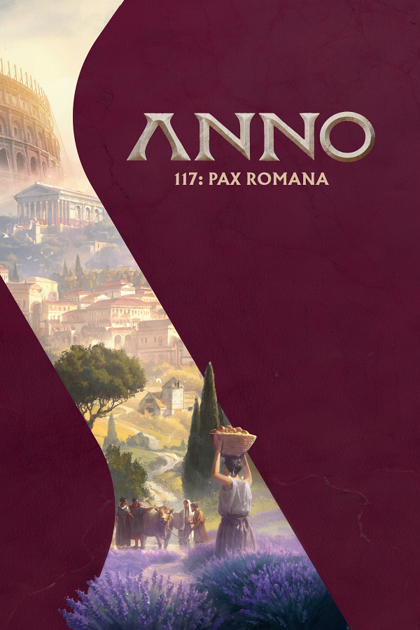

Anno 117: Pax Romana
Every archived year-end list appearance, including placement and points earned.
About the Game
Comparative Grid Gold EditionIn the Gold Edition, gain access to the Anno 117: Pax Romana base adventure and expand your reach to new provinces with the Year 1 Pass – containing 3 DLCs and 5 cosmetic bonuses! PC Specs About the GameAs governor, how you build and govern will shape your story, your citizens’ destiny, and your provinces’ future. Will you cooperate with other governors or prove your military prowess by challenging your rivals? The cost of peace is yours to decide. EXPERIENCE THE PREMIER BUILDERBuild your provinces with unmatched detail, flexibility, and scale. Watch kids chase dogs through the streets or thousands cheer in the arena. Build upon the land that you see, from the beautiful heartland of Latium to the mysterious Celtic wetlands of Albion… where no civilized Roman wants to be. BECOME A ROMAN GOVERNORDesign the cities of your dreams at the peak of the Roman Empire as you balance your people's needs with the relentless demands of the emperor. Forge alliances across the empire or showcase your might with strategic land battles and naval combat. You may even defy the emperor himself – but not without consequences. CHOOSE THE FATE OF YOUR PROVINCESEvery decision you make as governor matters. Will you honor local Celtic culture or enforce Roman traditions? Grow your provinces through diplomacy and commerce or conquer through military strength. Your choices will shape not only the future of your citizens and your provinces, but your own story as well.
| Released | 2025-11-12 |
|---|---|
| Developer | Ubisoft Mainz |
| Publisher | Ubisoft Entertainment |
| Genres | Strategy, Simulation |
| Platforms | PC |
SingleplayerSteam AchievementsMultiplayerFull controller supportCo-opStory RichOnline Co-OpExplorationSandboxPvPChoices MatterHistorical
Where to Buy
Game information provided by RAWG.
Points by Year
List History
| Year | Source | List | Placement | Points |
|---|---|---|---|---|
| 2025 | NPR | The best games of 2025, picked by NPR's staff | Unranked | 1 |